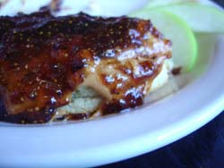
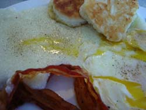

On the road, final chapter
One of the best things about being on the road is eating breakfast out. At home I rarely eat breakfast, preferring to mainline my coffee black unaccompanied by food in order to better facilitate the absorption of the caffeine into my system. But when we’re out of town I’ll down a styrofoam cup or two of the in-room brew and have breakfast with my husband.
Saturday morning we ate at an “organic bistro and bar” called Padgett Station. We had actually gone there for coffee the night before to juice up for the show at the Cat’s Cradle and been impressed by the quality of the brew and the friendliness of the barista. In general, though, I give them a thumbs down for pretentiousness, especially for advertising themselves as being “computer-free” every Friday and Saturday night from 8:00 PM until closing. Why? To encourage socializing amongst the patrons or to free up tables? Or to distinguish themselves from Starbucks and other coffeehouses?
Furthermore, there was a misunderstanding when we arrived that morning in that we asked the woman at the register if we would be waited on. We received an affirmative reply, upon which we seated ourselves and were ignored for 15 minutes. Finally she came over to our table, sat down with us, and explained that she hadn’t understood what we were asking her and that we needed to order our food at the counter and then someone would bring it to the table. I wouldn’t have minded the 4-inch cleavage so much if she hadn’t actually been sitting at our table. Then, making conversation while taking our order, she asked us if we were relocating to the Chapel Hill area. When we said no she replied, “Why not?!” in a strident, challenging tone, as though anyone who wasn’t moving there was out of their minds.

Finally, the food; we ordered crumpets with various toppings, egg and “award-winning” cheddar cheese for me, and “organic” peanut butter and their house-made fig jam for my husband. If we wanted to taste the crumpets we probably should have gotten them with the “organic” butter or lemon curd, rather than toppings with such strong flavors. As it was, while I’m sure they were delicious, we might as well have eaten Thomas’ English muffins and spent a lot less money.

Sunday morning, before we left to come home, we stopped at a real southern diner called, for some odd reason Steak or Eggs, even though you can get steak and eggs there, and a bottomless cup of coffee. My husband in fact enjoyed the steak and eggs while I had eggs with bacon and grits. We both got their biscuits which were lovely and light. They split them in half and toasted them on the grill. My only complaint was that the grits were a bit watery and I’m pretty sure they were using margarine, which is something you tend to find down south. About the eggs, I ordered them over medium, and they were barely done enough. I can only imagine how underdone they would have been if I had ordered them over easy. I have found that it’s really difficult to get eggs properly cooked, fried, with the yolks still runny but not super-runny, if you know what I mean. If I order them over well the yolks are too hard—not runny at all, and I can’t dip my toast in them. This has been a problem for me even at Ritter’s Diner here in Pittsburgh, famous for their breakfasts.
I was reminded while I was eating my eggs of a hilarious book I read called Do Try To Speak As We Do, by Marjorie Leet Ford, about an American au pair in an upper middle class British home and how she suffered there. The mother made her horrible, barely cooked soft-boiled eggs for breakfast every morning and the poor girl had to force down her gag reflex in order to eat them. And of course she wore her winter coat all the time indoors because the house was freezing. If you ever see this book you should read it because it has some great English food scenes in it, and at the end the au pair goes to cooking school; it is wet-your-pants funny.
Comments
In case anyone was wondering, mom orders diner food in diner speak, sounding very much like Joan Crawford in Mildred Pierce. “Two eggs, well! Toast, rye! Well!” It’s quite hilarious.
I love diners! And I’m sure diner waitresses (I say waitresses because I’ve never seen a diner waiter) appreciate orders in diner-speak.
Add a comment